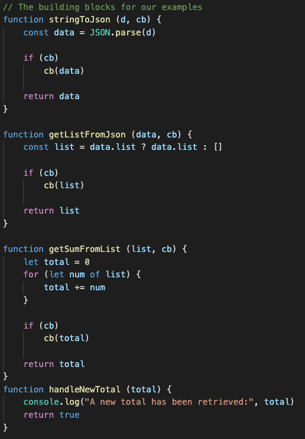
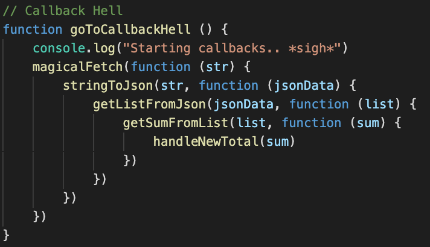
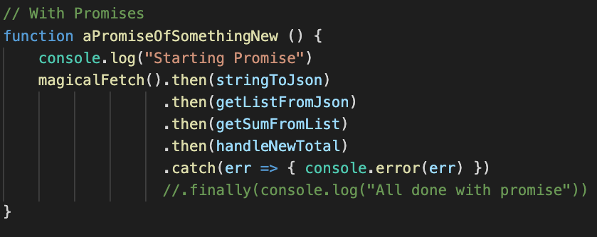
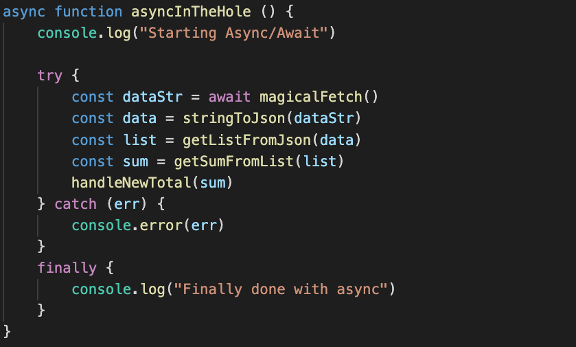

Promises and Async/Await
Example Functions:

Callback Hell

- Common functionality should be divided into seperate functions
- Callbacks are a result of syncronous code handling asyncronous functionality
- JS was once ill-equiped to handle complex workflows
goToCallbackHell()
Promises

- Introduced to alleviate the stress of working with chained workflow
- Allows for a flatter and clearer order of calls
- Syntax is a mix of callbacks and standard syncronous code
aPromiseOfSomethingNew()
Async/Await

- Async/Await allows for asyncronous code with a syncronous-looking syntax
- Purely syntatic sugar on top of promises
- Must define the function as
async and await promises
asyncInTheHole()
Final Notes
runAllExamples()- In this case, our examples are running the same way, but this isn't always the case
- Promises defer action to the "Microtask Queue", not covered here
- For now: Promises and Async/Await are a path to salvation out of Callback Hell